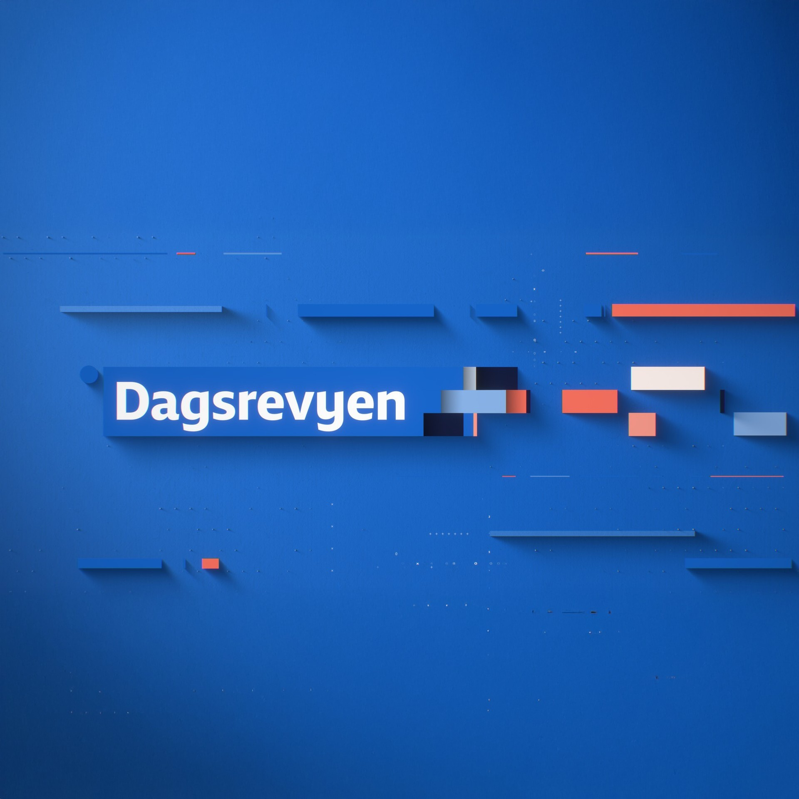
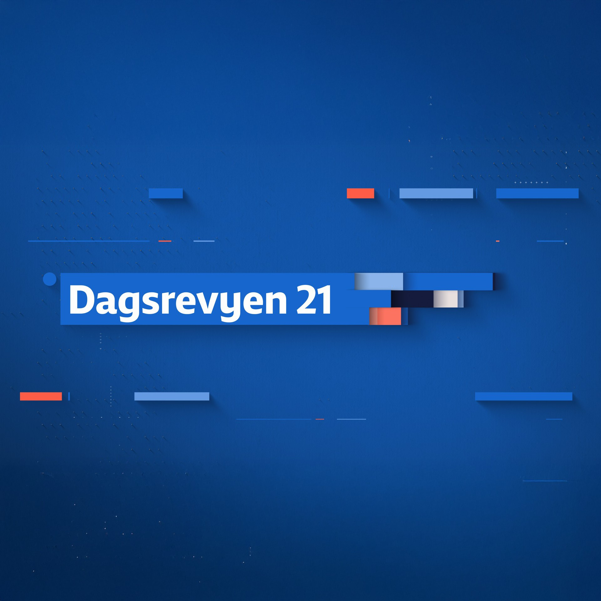
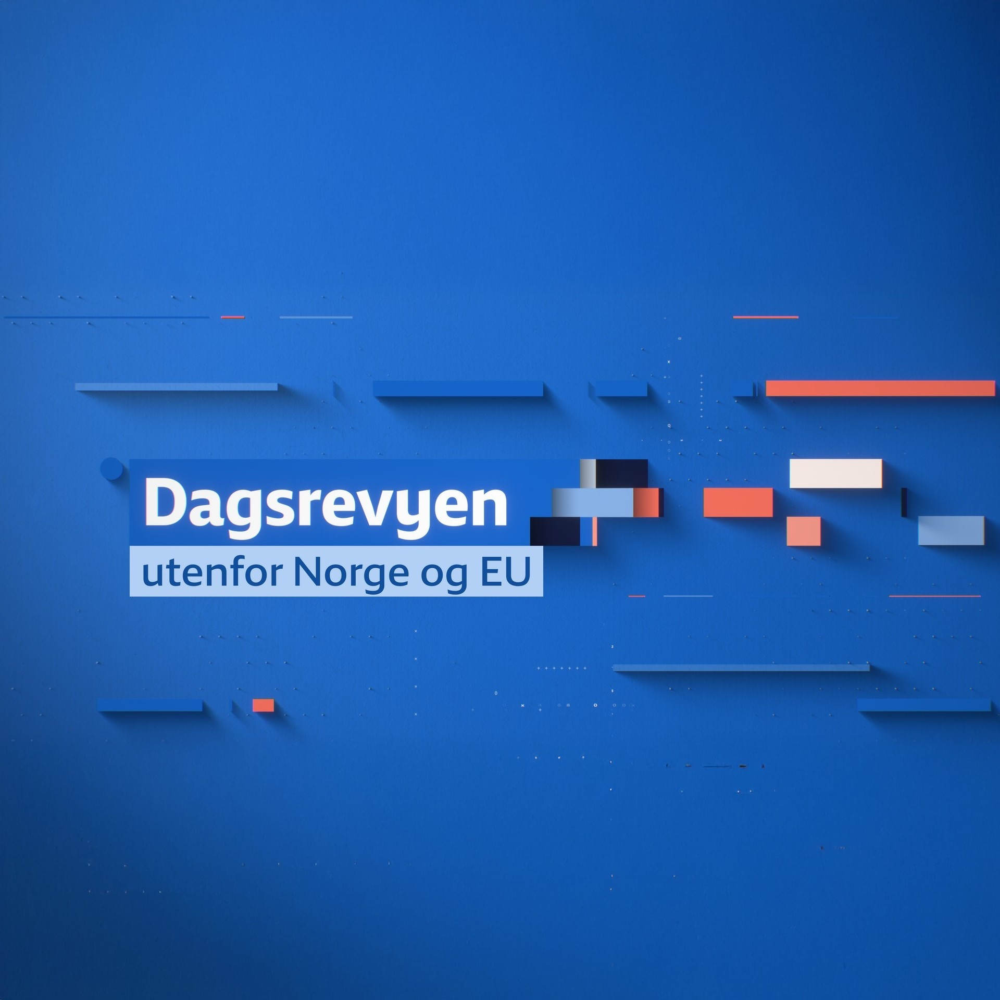

Dagsrevyen, on demand.
NRK's flagship evening news in your podcast app, refreshed hourly. Unofficial. For personal use.


NRK's flagship evening news in your podcast app, refreshed hourly. Unofficial. For personal use.


